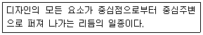

실내건축기능사 (2009-09-27 기출문제)
1과목: 실내디자인
1. 채광량을 조절하는 장치가 아닌 것은?
- 루버(louver)
- 커튼(curtain)
- 콘벡터(convector)
- 블라인드(blind)
(정답률: 82%)

2. 실내디자인에서 가구나 실의 크기를 결정하는 기준이 되는 것은?
- 그리드
- 휴먼스케일
- 모듈
- 공간의 형태
(정답률: 72%)
3. 가구의 기능에 따른 분류에 해당되는 것은?
- 가동가구
- 인체지지용 가구
- 조립식 가구
- 붙박이 가구
(정답률: 59%)
4. 황금비와 황금비 직사각형이 사용된 대표적인 건축물은?
- 법주사 팔상전
- 불국사
- 파르테논 신전
- 피사의 탑
(정답률: 75%)
5. 다음이 설명하고 있는 것은?

- 강조
- 조화
- 방사
- 통일
(정답률: 87%)
6. 다음 주택계획에 대한 설명 중 옳지 않은 것은?
- 거실의 형태는 일반적으로 직사각형의 형태가 정사각형의 형태보다 가구의 배치나 실의 활용에 유리하다.
- 리빙 다이빙 키친(LDK)의 형태는 대규모 주택에서 많이 나타나는 형태로 작업 동선이 길어지는 단점이 있다.
- 침실의 위치는 소음원이 있는 쪽은 피하고, 정원 등의 공지에 면하도록 하는 것이 좋다.
- 부엌의 위치는 항상 쾌적하고, 일광에 의한 건조 소독을 할 수 있는 남쪽 또는 동쪽이 좋다.
(정답률: 89%)
7. 실내공간의 분위기에 미치는 영향이 일반적으로 비교적 작은 것은?
- 구조계획
- 의장계획
- 설비계획
- 평면계획
(정답률: 44%)
8. 실내디자이너가 갖추어야 할 능력과 가장 거리가 먼 것은?
- 인간의 욕구를 지각하는 능력과, 분석하여 이해하는 능력을 갖추어야 한다.
- 실내구조를 강조한 구조 전반에 관한 지식, 건축의 체계 설비시설, 구성요소에 관한 지식을 갖추어야 한다.
- 기초디자인 이론, 미학 역사, 계획대상에 대한 조사 분석, 공간계획과 프로그래밍에 관한 지식을 갖추어야 한다.
- 실내디자이너에게는 미적감각이 가장 중요하며, 문제분석 능력이나 경영능력, 심리학적인 안목은 필요하지 않다.
(정답률: 91%)
9. 다음의 투시도에 대한 설명 중 옳은 것은?
- 대상 물체가 관찰자의 시선으로부터 90º이내이면 자연스럽게 그려진다.
- 관찰자와 공간과의 거리가 가까우면 자연스럽게 보인다.
- 같은 공간이라도 관찰자의 위치, 눈높이, 시선의 각도에 따라 다르게 표현된다.
- 1소점 투시도에는 실내공간의 2면과 바닥, 천장만이 그려진다.
(정답률: 64%)
10. 우리나라의 전통가구중 장과 더불어 가장 일반적으로 쓰려던 수납용 가구로 몸통이 2층 또는 3층으로 분리되어 상자 형태로 포개 놓아 사용된 것은?
- 농
- 소반
- 함
- 괘
(정답률: 73%)
11. 실내공간을 실제크기보다 넓어보이게 하는 방법이 아닌 것은?
- 창이나 문 등의 개구부를 크게 하여 시선이 연결되도록 계획한다.
- 큰 가구는 벽에서 떨어뜨려 배치한다.
- 크기가 작은 가구를 이용한다.
- 질감이 거친 것보다 고운 것을 사용한다.
(정답률: 83%)
12. 쇼윈도우 전면의 눈부심 방지 방법으로 옳지 않은 것은?
- 쇼윈도우 내부를 도로면보다 약간 어둡게 한다.
- 가로수를 쇼윈도우 앞에 심어 도로 건너편 건물의 반사를 막는다.
- 유리를 경사지게 처리하거나 곡면유리를 사용한다.
- 차양을 쇼윈도우에 설치하여 햇빛을 차단한다.
(정답률: 78%)
13. 설계나 생산에 쓰이는 치수단위 또는 체계를 모듈이라고 하는데, 인체척도를 근거로 하는 모듈을 주장한 사람은?
- 프랭크 로이드 라이트
- 르 꼬르뷔지에
- 마스 반 데르 로에
- 월터 그로피우스
(정답률: 87%)
14. 실내 공간의 성격을 형상하는 가장 중요한 디자인 요소는?
- 마감 재료
- 바닥 구조
- 장식품 종류
- 천장의 질감
(정답률: 72%)
15. 한 공간이 다른 공간과 차단적으로 분할되기 시작하는 벽체의 높이는 인체를 기준으로 어느 높이에 해당하는가?
- 무릎높이
- 가슴높이
- 눈높이
- 키를 넘어서는 높이
(정답률: 42%)
16. 실내조명 설계 과정에서 가장 우선적으로 이루어져야 하는 사항은?
- 소요 조도 결정
- 조명 방식 결정
- 광원의 수 결정
- 전등 용량 결정
(정답률: 78%)
17. 결로가 방생하는 직접적인 원인이 아닌 것은?
- 환기의 부족
- 실내외의 온도차
- 실내습기의 과다발생
- 건물 지붕의 기울기
(정답률: 92%)
18. 다음 중 건축물에서 에너지 절약을 위한 방법으로 가장 적절한 것은?
- 모든 창문을 가급적 크게 한다.
- 환기량을 증가시킨다.
- 건축물의 방위를 남향으로 한다.
- 북쪽의 창을 크게 하여 여러 개를 배치한다.
(정답률: 76%)
19. 잔향 시간에 관한 설명으로 옳지 않은 것은?
- 잔향 시간이 길면 명료성이 떨어진다.
- 잔향 시간은 실의 형태와 깊은 관련성이 있다.
- 잔향 시간이 너무 짧으면 음악의 풍부성이 저하된다.
- 잔향 시간은 실의 용적에 비례하고 흡음력에 반비례한다.
(정답률: 47%)
20. 일반적으로 실내 공기 오염의 지표로 사용되는 것은?
- 산소의 농도
- 질소의 농도
- 이산화탄소의 농도
- 황의 농도
(정답률: 93%)
2과목: 실내환경
21. 콘크리트용 골재에 요구되는 성질로 맞지 않는 것은?
- 골재의 강도는 콘크리트 중의 경화시멘트 페이스트의 강도 이상일 것
- 골재의 입형은 편평ㆍ세장하고, 표면은 거칠지 않을 것
- 입도는 조립에서 세립까지 연속적으로 균등히 혼합되어 있을 것
- 유해량의 먼지, 흙 유기불순물 등을 포함하지 않을 것
(정답률: 55%)
22. 건축 재료에 요구되는 성질에 대한 설명중 옳지 않은 것은?
- 지붕재료는 열전도율이 작아야 한다.
- 창호재료는 내화,내구성이 큰것 이어야 한다.
- 구조재료는 외관이 좋은 것이어야 한다.
- 바닥재료는 탄력성이 있어야 한다.
(정답률: 71%)
23. 목면ㆍ마사ㆍ양모ㆍ폐지 등을 원료로 만든 원지에 스토레이트 아스팔트를 침투시켜 롤러로 압착하여 만든 것으로 아스팔트방수 중간층재로 이용되는 아스팔트 제품은?
- 아스팔트 루핑
- 블론 아스팔트
- 아스팔트 싱글
- 아스팔트 펠트
(정답률: 60%)
24. 금속의 방식법에 대한 설명 중 옳지 않는 것은?
- 가능한 한 이종금속과 인접하거나 접촉하여 사용하도록 한다.
- 균질한 것을 사용하고 사용시 큰 변형을 주지 않는다.
- 표면을 평활하고 깨끗하게 하면, 건조 상태를 유지하도록 한다.
- 부분적으로 녹이 나면 즉시 제거하도록 한다.
(정답률: 89%)
25. 점토 제품의 흡수율이 큰 것부터 순서가 옳은 것은?
- 도기＞토기＞석기＞자기
- 도기＞토기＞자기＞석기
- 토기＞도기＞석기＞자기
- 토기＞석기＞도기＞자기
(정답률: 73%)
26. 다음 중 열경화성 수지만으로 구성된 것은?
- 페놀수지, 요소수지, 멜라민수지
- 염화비닐수지, 폴리카보네이트수지, 실리콘수지
- 폴리카보네이트수지, 실리콘수지, 우레탄수지
- 폴리스티렌수지, 폴리아미드수지, 우렌탄수지
(정답률: 65%)
27. 다음 중 유성페인트에 대한 설명으로 틀린 것은?
- 붓바름 작업성이 좋다.
- 내후성이 뛰어나다.
- 건조시간이 길다.
- 내알칼리성이 뛰어나다.
(정답률: 62%)
28. 응결하기 시작한 콘크리트에 새로운 콘크리트를 이어칠 경우 발생될 수 있는 시공불량의 이음부는?
- 언더컷
- 치장졸눈
- 수축줄눈
- 콜드 조인트
(정답률: 42%)
29. 2장 또는 3장의 유리를 일정한 간격을 두고 둘레에는 틀을 끼워서 내부를 기밀로 만들고 여기에 건조 공기를 넣거나 진공 또는 특수가스를 넣은 것으로 결로방지, 방음 및 단열 효과가 있는 유리는?
- 스테인드 글라스
- 강화판 유리
- 복층 유리
- 열선흡수 유리
(정답률: 87%)
30. 내열성, 내한성이 우수한 수지로 - 60 ~ 260℃의 범위에서는 안정하고 탄성을 가지며 내후성 및 내화학성 등이 아주 우수하기 때문에 접착제, 도료로서 주로 사용되는 수지는?
- 페놀수지
- 멜라민수지
- 실리콘수지
- 염화비닐수지
(정답률: 64%)
3과목: 실내건축재료
31. 다음의 석고 플라스터에 대한 설명 중 틀린 것은?
- 원칙적으로 해초 또는 풀즙을 사용하지 않는다.
- 경석고 플라스터는 고온소성의 무수석고를 특별한 화학처리를 한 것으로 경화 후 아주 단단하다.
- 경화ㆍ건주시 치수 안정성이 뛰어나 균열이 없는 마감을 실현할 수 있다.
- 석고 플라스터 중에서 가장 많이 사용하는 것은 크림용 석고 플라스터이다.
(정답률: 50%)
32. 석재를 인력으로 가공할 때 표면이 가장 거친 것에서 고운 것으로 바르게 나열한 것은?
- 혹두기→도드락다듬→정다듬→잔다듬→물갈기
- 혹두기→정다듬→잔다듬→도드락다듬→물갈기
- 정다듬→혹두기→도드락다듬→잔다듬→물갈기
- 혹두기→정다듬→도드락다듬→잔다듬→물갈기
(정답률: 73%)
33. 석재의 일반적인 성질에 대한 설명 중 틀린 것은?
- 불연성이다.
- 압축강도는 인장강도에 비해 매우 작다.
- 비중이 크고 가공성이 좋지 않다.
- 내구성, 내화학성이 우수하다.
(정답률: 74%)
34. 굳지 않은 콘크리트의 컨시스턴시(consistency)를 측정하는 방법은?
- 슬럼프 시험
- 오토클레이브 팽창도 시험
- 체가름 시험
- 블레인 시험
(정답률: 67%)
35. 집성목재에 대한 설명으로 옳지 않은 것은?
- 요구된 치수, 형태의 재료를 비교적 용이하게 제조할 수 있다.
- 제재판재 또는 소각재 등의 부재를 섬유방향이 직교하도록 접착제로 겹쳐 붙여 만든 것이다.
- 옹이, 균열 등의 결함을 제거, 분산시킬 수 있으므로 강도의 편차가 적다.
- 충분히 건조된 건조재를 사용하므로 비틀림, 변형 등을 피할 수 있다.
(정답률: 49%)
36. 시멘트 분말도에 대한 설명 중 옳지 않은 것은?
- 분말도가 높을수록 풍화가 억제된다.
- 분말도가 높을수록 수화작용이 빠르다.
- 분말도가 높을수록 블리딩(bleeding)이 적다.
- 분말도가 높을수록 강도발현이 빠르다.
(정답률: 34%)
37. 목재의 함수율에서 기건상태의 함수율은?
- 15%
- 20%
- 30%
- 40%
(정답률: 68%)
38. 재료의 발달과정에 대한 설명 중 옳지 않은 것은?
- 선사시대부터 18세기 초기까지 목재, 석재, 점토 등과 같이 천연재료를 대부분 사용하였다.
- 18세기 후반에 일어난 산업혁명 이후부터 재료의 제조 기술의 발전이 있었으나, 재료의 형태는 18세기 후반과 비교하여 거의 변화가 없었다.
- 20세기 중반에 들러 신소재의 개발이나 제조기술의 발전이 있었으나, 재료의 형태는 18세기 후반과 비교하여 거의 변화가 없었다.
- 미래에는 건설현장에 로봇 등이 대량 투입되어질 전망이므로, 로봇시공에 적합한 재료를 제조할 필요가 있다.
(정답률: 66%)
39. 아연에 대한 설명 중 옳지 않은 것은?
- 공기 중에서 대부분 산화한다.
- 비철금속으로 연성이 우수하다.
- 철강의 방식용 피복재를 사용된다.
- 황동은 구리와 아연을 주체로 한 합금이다.
(정답률: 47%)
40. 점토제품 중 저급점토, 목탄가루, 톱밥 등으로 혼합, 성형한 후 소성한 것으로 구멍벽돌과 다공벽돌이 있으며 단열과 방음성이 우수한 것은?
- 붉은벽돌
- 경량벽돌
- 이형벽돌
- 내화벽돌
(정답률: 47%)
41. 다음 중 기둥과 기둥 사이의 간격을 나타내는 용어는?
- 좌굴
- 스팬
- 면내력
- 접합부
(정답률: 64%)
42. 다음 중 기초도면 작성시 가장 먼저 해야 할 사항은?
- 테두리선을 긋는다.
- 지반선과 벽체 중심선을 긋는다.
- 재료의 단면표시를 한다.
- 기초 크기에 알맞게 축척을 정한다.
(정답률: 54%)
43. 철근콘크리트구조의 1방향 슬래브의 최소두께는 얼마 이상인가?
- 80mm
- 100mm
- 150mm
- 200mm
(정답률: 71%)
44. 문과 문틀에 장치하여 열려진 여닫이문이 저절도 닫아지게 하는 창호철문은?
- 도어후크
- 도어홀더
- 도어체크
- 도어스톱
(정답률: 44%)
45. 철골구조에 대한 설명 중 옳지 않은 것은?
- 철골구조는 하중을 전달하는 주요 부재인 보다 기둥 등을 강재를 이용하여 만든 구조이다.
- 철골구조를 재료상 라멘구조, 가세골구조, 튜브구조, 트러스구조 등으로 분류 할 수 있다.
- 철골구조는 일반적으로 부재를 접합하여 뼈대를 구성하는 가구식 구조이다.
- 구각은 베이스 플레이트, 리브 플레이트, 윙플레이트 등으로 구성된다.
(정답률: 54%)
46. 도면 표시 기호 중 면적과 나비의 표시가 올게 짝지어진 것은?
- A-W
- V-H
- A-L
- THK-W
(정답률: 57%)
47. 프리스트레스트 콘크리트 구조의 장점이 아닌 것은?
- 내구성이 크다.
- 장스팬구조가 가능하다.
- 구조물의 복원성이 우수하다.
- 화재시 위험도가 낮다.
(정답률: 51%)
48. 다음 중 견치돌을 옳게 설명한 것은?
- 지름 200mm 정도로 깨어 낸 막생긴 돌로써 지정, 잡석 다짐 등에 사용된다.
- 구들장으로 사용되며, 구들 아랫목에 놓은 것을 함실장이라 한다.
- 한 변이 300mm 정도인 네모뿔형의 돌로써 석축에 사용된다.
- 두께에 비하여 넓이가 큰 돌을 말하며 길이 1000mm 정도가 주로 쓰인다.
(정답률: 64%)
49. 다음 중 디바이더의 용도로 옳은 것은?
- 원호를 용지에 직접 그릴 때 사용한다.
- 직선이나 원주를 등분할 때 사용한다.
- 각도를 조절하여 지붕물매를 그릴 때 사용한다.
- 투시도 작도시 긴 선을 그릴 때 사용한다.
(정답률: 72%)
50. 벽, 지붕, 바닥 등의 수직 하중과 풍력, 지진 등의 수평 하중을 받는 중요 벽체는?
- 장막벽
- 비내력벽
- 내력벽
- 칸막이벽
(정답률: 72%)
4과목: 건축일반
51. 다음 중 목구조의 장점으로 옳은 것은?
- 큰 부재를 얻기 쉽다.
- 가공성이 좋다.
- 강도가 크다.
- 부패에 대한 위험성이 없다.
(정답률: 71%)
52. 철골구조보에서 L형강과 강판을 접합하여 I모양으로 조립한 보는?
- 형강 보
- 플레이트 보
- 허니컴 보
- 상자형 보
(정답률: 36%)
53. 구조체 자체의 무게가 적어 넓은 공간의 지붕 등에 쓰이는 것으로, 상암 월드컵 경기장, 제주 월드컵 경기장에서 볼 수 있는 구조는?
- 절판구조
- 막구조
- 셀구조
- 현수구조
(정답률: 50%)
54. 각종 도면에 대한 설명 중 옳지 않은 것은?
- 배치도는 전체를 파악하는 중요한 도면으로 대지인의 건물의 위치 등을 표현한다.
- 전개도는 건물 내부의 입면을 정면에서 바라보고 그리는 내부 입면도이다.
- 평면도는 건축물을 건축물의 바닥면으로부터 2m이상의 높이에서 수평으로 절단하여 그린 것이다.
- 단면도는 건축물을 수직으로 절단하여 수평방향에서 바라 보고 그린 것이다.
(정답률: 69%)
55. 다음 중 지진에 가장 강한 구조물은?
- 목구조
- 블록구조
- 철근콘크리트구조
- 돌구조
(정답률: 83%)
56. 벽돌벽에 배관 배선, 기타용으로 그 층높이의 3/4 이상 연속되는 세로홈을 팔 때, 그 홈의 깊이의 벽두께의 최대 얼마 이하로 하는가?
- 1/2
- 1/3
- 1/4
- 1/5
(정답률: 27%)
57. 다음 중 실내건축 투시도 그리기에서 끝으로 하여야 할 작업은?
- 서있는 위치 결정
- 눈 높이 결정
- 입면상태의 가구 설정
- 질감의 표현
(정답률: 83%)
58. 목재의 이음과 맞춤을 할 때에 주의해야 할 사항으로 옳지 않은 것은?
- 이음과 맞춤의 위치는 응력이 큰 곳으로 하여야한다.
- 공작이 간다하고 튼튼한 접합을 선택하여야 한다.
- 맞춤면은 정확히 가공하여 서로 밀착되어 빈틈이 없게 한다.
- 이음 맞춤의 단면은 응력의 방향에 직각으로 한다.
(정답률: 49%)
59. 도면의 치수 표현에 있어 치수 단위의 원칙은?
- mm
- cm
- m
- Inch
(정답률: 90%)
60. 선의 종류 중 대상물의 보이지 않는 부분을 나타내는 선은?
- 굵은 실선
- 가는 실선
- 파선
- 1점 쇄선
(정답률: 67%)